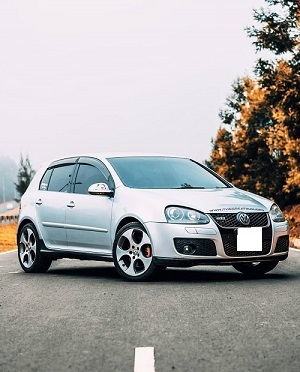

The VW ranging between Ksh 1.2m-Kshs 1.5m,the base GTI requires you to turn a key to start the engine, which is so 2010, the SE model, which adds some luxury features versus lesser versions. It has the easygoing six-speed manual transmission, but Volkswagen's six-speed dual-clutch automatic is just as good. Standard features in our chosen model includes leather seating surfaces, keyless entry with push-button start, and an eight-speaker Fender premium audio system.
The turbocharged four-cylinder that graces the GTI's engine bay is one of the greats.The clutch pedal in models with the manual transmission is light, which means that shifting is never a chore. The optional dual-clutch automatic is one of our favorite non-manual transmissions. Its lightning-quick gearchanges and telepathic shift programming make it a perfect mate to the GTI's storied powertrain.
The GTI is one of our favorite cars to drive—we'd happily pilot one every day. It is nimble and responsive and feels flat around corners despite its tall frame. Most important, the GTI is well coordinated and predictable, responding just as you'd want to your steering and throttle inputs. All of that grip and handling prowess would be useless if paired with numb steering. The GTI reacts to steering inputs so quickly and accurately that you'll think the car is a sentient being. Its brakes are firm and progressive on the road and strong on the track.